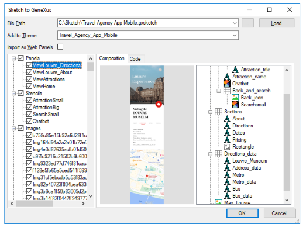

Today, software creation and evolution are carried out by multidisciplinary teams that may have to work remotely, and that work on different tasks and with different roles. The different software pieces evolve with continuous processes of integration, testing, and continuous delivery. It's more than just development and operations. Coordinating these complementary teams and different work environments, following a dynamic and circular process, is highly difficult and expensive. GeneXus 17 simplifies and reduces the efforts of integrating activities of remote and multidisciplinary teams into a system and the effort related to the process of continuous delivery of software solutions. It integrates the designs allowing for DesignOps; it improves integration, versioning, and sharing of knowledge; expands model-driven testing and automation; expands built-in deployment capabilities to more targets, and allows you to add and follow up pipelines and their activities right from the IDE and GXserver's console; among others. DesignOpsDesignOps came to scale the value of design in the solutions we build, recognizing that design is software and that it evolves together with the rest of the code as the solution evolves. GeneXus 17 facilitates DesignOps, integrating designers, including designs in the engineering processes. It revamps Import from Sketch.  More information for designers and developers at DesignOps and GeneXus. Knowledge MatrixTo reach new levels of productivity, it is important to be able to build collaboratively, building on blocks that others have already made and tested. These building blocks are Modules. Once modules have been developed and built, they can be shared or reused on other projects. This requires storing and versioning them as assets on repository managers and handling dependencies. In GeneXus 17, you can package and share your modules through Repository Managers. Those that host modules, are also known as Knowledge Matrixes (or Modules Servers) and can be connected to the IDE. The whole process of packaging, publishing, and integrating modules can be done in batch mode through specific MSBuild tasks too. GeneXus 17 also gives birth to a 'Global Matrix' that starts to have some modules shared by GeneXus with the whole community. More information at: Modules Server, Modules Distribution in GeneXus, Modules MsBuild Tasks. TestingAutomated testing is essential for the accelerated evolution that systems require today. Modeling the tests within the tool and automating them as part of DevOps is crucial. GeneXus 17 includes GXtest in the IDE and tasks to automate tests: Unit tests, UI Tests for both: Web and Native Mobile applications. In addition, in GeneXus 17 data sets can be combined to generate unit tests. Database mocking is supported, which simplifies the creation of regressive tests. In addition, with Test coverage, test coverage rates are calculated, to know how far your tests already reached. More information at: GXtest for GeneXus 17 Release Notes. DeploymentDeployment has to be modeled. The generated applications are often Multi-cloud, they run on multiple platforms and are integrated with many others. They become more complex every day and require high levels of security. So, modeling the deployment using Deployment Unit objects, as introduced in GeneXus 17, has become a must and is a required first step. Stepping forward in that direction, GeneXus 17 adds deployment to Kubernetes environments, to facilitate the deployment of complex solutions in various scenarios where containerization and orchestration layers are required. This adds a lot of flexibility too since Docker and Kubernetes are supported by almost every Cloud Provider. GeneXus 17 also adds deployment to SAP Cloudfoundry, and more than that, it facilitates extensibility: The code that performs the deployment to the various targets is on GitHub, and you can create your own target from there if you want to deploy your Deployment Units to another non-built-in target. More information at: How to Deploy an Application to a Kubernetes cluster, How to: Deploy a Kubernetes cluster to AKS, Deploy to SAP Cloud Foundry, https://github.com/genexuslabs/deployment-targets GeneXus Server: SCM, Continuous Integration, Team collaborationGeneXus Server 17 is where the source of knowledge and truth of your solutions is hosted and versioned. It integrates the work of your team and has been built to expand DevOps in your organization. It includes built-in functionalities to register and track continuous integration pipelines right from the IDE, and it lets you integrate better than ever with any team collaboration software. More information at GeneXus Server 17 Release Notes |
| Backlinks | ||
| Toc:GeneXus 17 | GeneXus Server 17 Release Notes | GXtest for GeneXus 17 Release Notes |